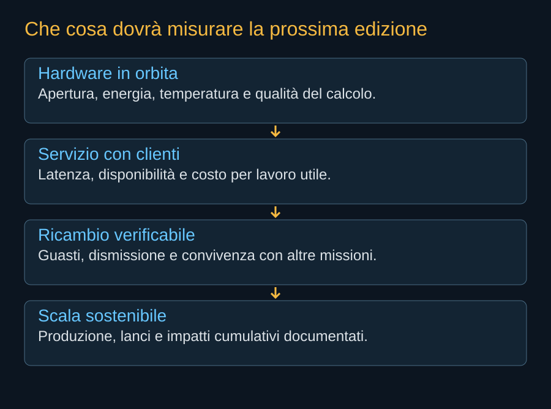

Il 10 ottobre 2026 Starmind è un programma riconoscibile, con una scheda di veicolo, un partner informatico, obiettivi di produzione e documenti regolatori. Il materiale pubblico verificato per questa edizione non documenta un satellite AI1 in servizio né prestazioni di volo della costellazione. Il primo traguardo non sarà raggiungere il numero massimo della domanda: sarà far lavorare un nodo rappresentativo e produrre dati che possano essere confrontati con il progetto.


Il bilancio di questa edizione
| Elemento | Che cosa sappiamo | Che cosa non dimostra |
|---|---|---|
| Starmind e AI1 | Nome e scheda sul sito SpaceX. | Hardware qualificato o servizio operativo. |
| Vera Rubin | Adattamento confermato da NVIDIA il 24 agosto. | Distinta e benchmark della versione orbitale. |
| Gigasat | Piano industriale a Bastrop; obiettivo dalla fine del 2027. | Cadenza misurata di consegna. |
| Domanda FCC | Deposito, accettazione procedurale e risposta tecnica di settembre. | Autorizzazione del milione di satelliti. Nei documenti qui verificati non è presente un provvedimento finale di concessione. |
| Energia e radiatori | Principi fisici e dati progettuali dichiarati. | Potenza continua e temperature misurate in volo. |
| Economia | Ipotesi esplorabili e dipendenze identificabili. | Prezzo verificato per lavoro utile. |
Una cronologia da interrogare
Il registro distingue precedenti, atti, annunci e risultati di altri programmi. Un evento in orbita di un concorrente non viene contato come missione Starmind. La ricerca filtra il testo; il pulsante Ripristina mostra l’intera cronologia. I collegamenti rinviano ai documenti, agli annunci e, per la conferma del nome, alla cronaca contemporanea.
16 eventi visualizzati
Nessun evento corrisponde alla ricerca.
| Data | Evento | Tipo | Stato e significato | Traccia |
|---|---|---|---|---|
| 2017 | Spaceborne Computer sulla ISS | Precedente | Esperimento su hardware commerciale dentro una stazione abitata; ritorno nel 2019. | Fonte |
| 2021 | Spaceborne Computer-2 | Precedente | Nuove prove di calcolo locale e IA sulla ISS. | Fonte |
| 2024-06-27 | Risultati dello studio ASCEND | Studio | Studio europeo di fattibilità, con condizioni sul ciclo ambientale e sul trasporto. | Fonte |
| 2025-11-04 | Google presenta Project Suncatcher | Annuncio | Programma di ricerca su calcolo con TPU alimentato dal Sole in orbita. | Fonte |
| 2025-11 | Starcloud-1 raggiunge l’orbita | Dimostratore | Il costruttore documenta il lancio con H100; successivamente rivendica prove di modelli. | Fonte |
| 2026-01-30 | Domanda SpaceX Orbital Data Center System | Atto | Fino a un milione di satelliti nel perimetro richiesto; non flotta dispiegata. | Fonte |
| 2026-02-02 | Accordo SpaceX–xAI | Atto | Documento societario del nuovo perimetro industriale. | Fonte |
| 2026-02-04 | FCC accetta la domanda per l’istruttoria | Atto | DA 26-113 apre l’esame e il periodo di commenti; non concede la costellazione. | Fonte |
| 2026-03-06 | Commenti Secure World Foundation | Commento | Richiesta di analisi dei rischi cumulativi, trasparenza e autorizzazioni per fasi. | Fonte |
| 2026-03-06 | Petizione American Astronomical Society | Commento | Opposizione alla domanda: posizione di una parte, non decisione FCC. | Fonte |
| 2026-06-23 | Conferma del nome Starmind | Annuncio | Conferma di Musk documentata dalla cronaca del 25 giugno; non riguarda il lancio di un satellite. | Fonte |
| 2026-08-24 | NVIDIA conferma Vera Rubin per Starmind | Annuncio | Piattaforma ottimizzata per la prima generazione; non benchmark di volo. | Fonte |
| 2026-09-16 | Risposta tecnica SpaceX alla FCC | Atto | Documento datato 16 settembre, dopo l’incontro del 14: inviluppi, laser e fine vita. | Fonte |
| 2026-10-01 | Prototipo Suncatcher in orbita | Dimostratore | Google annuncia lancio Transporter-18, contatto e inizio degli esperimenti. | Fonte |
| 2026-10-10 | Scheda AI1 verificata per questa edizione | Scheda | 30 m, 75 m, fino a 250 kW di picco e 175 kW medi: caratteristiche dichiarate. | Fonte |
| Fine 2027 | Obiettivo Gigasat / primo dispiegamento | Obiettivo | La pagina SpaceX indica una possibile partenza della produzione e del dispiegamento dalla fine del 2027; calendario prospettico. | Fonte |
Il prossimo aggiornamento deve aggiungere prove
Una fotografia di hardware integrato potrà mostrare una fase di costruzione. Un test a terra potrà verificare un sottosistema. Un lancio potrà dimostrare trasporto e separazione. Il servizio richiederà apertura, collegamenti, energia, controllo termico e calcolo corretto. Le edizioni future conserveranno queste distinzioni invece di chiamare ogni passaggio “costellazione operativa”.
I dati più utili saranno temperatura e potenza associate a un carico identificabile, qualità del risultato, durata del lavoro, errori e tempi di recupero. Per la rete conteranno disponibilità e prestazioni sotto carico; per la flotta guasti, manovre e fine vita. Per l’economia servirà un confronto a parità di compito con un’alternativa concreta.
Glossario di lettura
- AI1
- Il veicolo di prima generazione presentato per Starmind; la sua scheda è una descrizione progettuale datata.
- Bus
- La piattaforma del satellite che fornisce strutture e servizi al payload.
- Payload
- Il carico che svolge la funzione principale della missione; qui il calcolo.
- Inferenza
- Applicazione di un modello già addestrato a una richiesta o a nuovi dati.
- Addestramento
- Processo che modifica i parametri di un modello usando dati e criteri di apprendimento.
- SSO / eliosincrona
- Orbita con una relazione regolare fra piano orbitale e Sole; l’assenza di eclissi richiede condizioni ulteriori.
- Emissività
- Capacità di una superficie di emettere radiazione rispetto al corpo nero, nella banda e nelle condizioni considerate.
- Superficie radiante efficace
- Area che contribuisce allo scambio nel modello; può differire dall’area geometrica di un pannello.
- ISL
- Collegamento intersatellitare; nel progetto sono centrali quelli ottici.
- TT&C
- Telemetria, tracciamento e comando: funzioni per conoscere e controllare il satellite.
- TID
- Dose ionizzante totale accumulata, una delle grandezze usate nell’analisi dell’elettronica.
- Evento singolo
- Effetto di una particella su un componente; può essere transitorio o distruttivo.
- Disponibilità
- Quota del tempo nella quale una risorsa può offrire il servizio previsto.
- Utilizzo
- Quota della capacità disponibile che esegue effettivamente il lavoro considerato.
- Dismissione
- Uscita dal servizio e completamento del piano di fine vita, distinta dallo spegnimento del payload.
Una scommessa che può produrre conoscenza
Il progetto è interessante perché mette insieme industrie che hanno tempi differenti: chip, satelliti, fabbriche, reti e lanci. Se riuscirà, il cambiamento sarà nella possibilità di aggiungere calcolo senza ripetere ogni volta gli stessi vincoli territoriali ed energetici. Se alcuni passaggi si riveleranno troppo onerosi, le prove potranno comunque chiarire quali parti del calcolo convenga avvicinare allo spazio.
Il giudizio rimane aperto e ha criteri concreti. Starmind deve dimostrare una capacità utile, ripetibile e sostenibile nel sistema che la rende possibile. È qui che un’idea enorme può diventare un’infrastruttura reale.
Fonti pubbliche e tracce
- SpaceX, Starmind e scheda AI1. Consultata il 10 ottobre 2026. Fonte aziendale per la scheda corrente e gli obiettivi Gigasat; non rapporto di prove in volo.
- NVIDIA, SpaceXAI e prima generazione Starmind. 24 agosto 2026. Conferma l’adattamento di Vera Rubin NVL72; non pubblica una distinta completa del satellite.
- FCC, DA 26-113: domanda accettata per l’istruttoria. 4 febbraio 2026. Deposito del 30 gennaio, fino a un milione di satelliti, 500–2.000 km. Accettazione procedurale, non autorizzazione.
- SpaceX, risposta alla FCC datata 16 settembre 2026. Documento primario scaricato e letto. Incontro del 14 settembre; inviluppi a pagina 8, rientro a pagina 9. Dichiarazioni e modelli del richiedente, non decisione della FCC.
- Secure World Foundation, commenti alla domanda SpaceX. 6 marzo 2026. Posizione del partecipante all’istruttoria su rischi cumulativi, trasparenza e autorizzazioni per fasi, non decisione FCC.
- Google, prototipo Suncatcher in orbita. 1 ottobre 2026: lancio con Transporter-18, contatto e avvio della raccolta dei dati. Annuncio del responsabile del programma, non prova di sostenibilità economica.